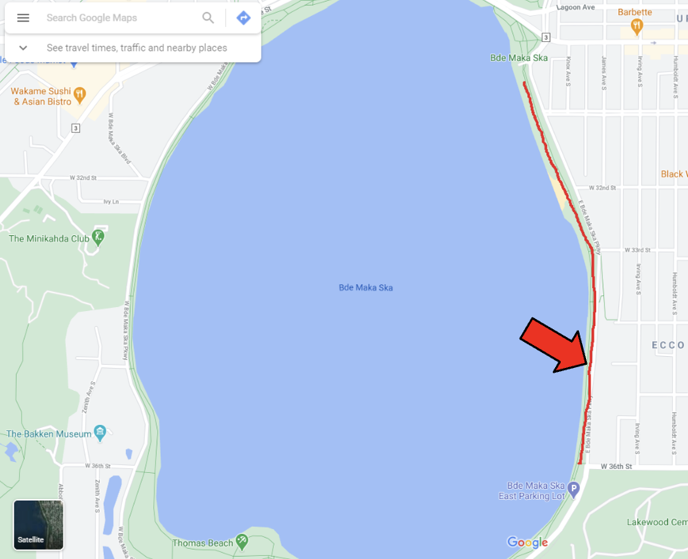

Deep Learning Models for Measuring Mask-Wearing Behavior in Public Spaces
1 Abstract
Advances in deep learning have brought the technology to a point of maturity where many pre-trained models exist for common tasks, such as object detection. As a result, smaller companies and industries who may have previously lacked the resources to invest in a machine learning department now have the ability to leverage this technology for their own benefit. To explore this further, this paper examines how the Department of Forest Resources, which may have traditionally been far away from software engineering and machine learning, could potentially use this technology to improve their operations. With the maturation of deep learning techniques, the department may now be able to leverage pre-existing models for tasks such as object detection and classification, which can have applications for forest conservation and management, as well as aiding public policy decision makers. The paper also explores the potential challenges and benefits of this approach. By leveraging pre-existing models, the Department of Forest Resources could gain a competitive edge while avoiding the significant investment of time and resources required to develop a machine learning department. The goal of this paper is to demonstrate the feasibility and potential benefits of leveraging deep learning models for practical applications in industries that previously lacked the resources to do so.
2 Introduction - TODO
- Background information and context of the research
- Background information on the importance of mask-wearing during the COVID-19 pandemic
- Research question or hypothesis
- Significance of the study
3 Literature Review - TODO
- Summary of previous research on the topic
- Gaps in the existing research that the current study addresses
- Summary of previous research on measuring mask-wearing behavior
- Discussion of the limitations of traditional methods for monitoring compliance
- Overview of deep learning models and their potential for object detection and classification
4 Methodology
4.1 Research Design
The original research goal was to test the efficacy of 2D/3D image-based sensors to quantify COVID compliance behaviors, namely movement behavior and exposure risk, amongst public trail users. This involved quantifying physical distancing and mask wearing.
4.2 Data Collection
A wireless 2D/3D image sensor prototype was deployed along typical public trail areas. Three locations were selected near amenities such as beaches, food/entertainment, and parks. MPRB permits were issued through summer 2021.
The location of the data collection sites are shown in Figure 1.



Examples of the data collection sites are shown in Figure 2.


Camera location for each of the data collection sites are shown in Figure 3.


This data was established as a feasible method of using a low-cost 2D/3D sensor system to capture detailed trail user movement behaviors, and the results were used to derive a metric to express ‘exposure risk’ using the detected trail user movement tracks.
4.3 Model Selection
4.3.1 Object Detection and Classification Methods
Several models were evaluated for the tasks of face detection and mask classification. The first model tested was developed by a previous student who worked on this project. This model was trained on a new dataset consisting of real-world images collected from image search sites. The goal of this model was to predict mask-wearing behaviour. This model was not fine-tuned on the images collected from the trails, so it essentially acted as a pure off-the-shelf model. This model showed promising results on training and validation, and in this project was tested on a new real-world trail image dataset. The performance of this model on the real-world dataset is discussed in the results (see Section 5).
Additional off-the-shelf models were tested in the interest of evaluating the feasibility of these off-the-shelf models for real-world applications and industries that may not have access to machine learning expertice.
4.3.2 Metric Evaluation
Standard metrics were used to evaluate the models introduced above. The metrics chosen were sensitivity, specificity, precision, and accuracy. Sensitvity and specificity are not commonly found when it comes to evaluating deep learning models, but are common to the field of biostatistics, which is relevant to this project. Precision and recall were chosen since they are very common metrics used across the fields of computer science and machine learning. All four metrics were assessed across models and sub-groups, but the focal point will be sensitivity and specificity.
Sensitivity is defined as the probability of having a true positive given that you tested positive: \(P(T=1 | D=1)\), where T is the true result, and D is the test result.
Specificity is defined as the probability of having a true negative given that you tested negative: \(P(T=0 | D=0)\), where T is the true result, and D is the test result.
5 Results
- Presentation of the findings, including accuracy rates and potential applications
- Graphs and tables
- Discussion of the challenges and limitations of the approach, such as privacy concerns and data quality
5.1 Helena NN
The model provided by the research group was evaluated against the metrics defined above. The results can be seen in Table 1. Plots can be seen in Figure 4 (a).
| Metric | Score | Lower bound | Upper bound |
|---|---|---|---|
| Sensitivity | 0.7987 | 0.7614 | 0.8403 |
| Specificity | 0.4302 | 0.3916 | 0.4675 |
| Precision | 0.5417 | 0.5094 | 0.5856 |
| Accuracy | 0.5988 | 0.5654 | 0.6233 |
5.1.1 Sub-group Metric Evaluations
5.1.1.1 Image Examples
Quadrant 1 image examples can be seen in Figure 5

Quadrant 3 image examples can be seen in Figure 6

5.1.1.2 Sub-group Metrics
See Figure 7 for metrics calculated across frame quadrants. The first and third quadrants represent the upper-left and upper-right quadrants of each frame, respectively. Quadrants 2 and 4 represent the bottom two quadrants of each frame, and in most cases are images of the ground. In this analysis, all faces were found in quadrants 1 and 3. Both quadrant 1 and quadrant 3 have poor specificity, with quadrant 3 having very poor specificity compared to the entire dataset. Both of these quadrants have high sensitivity also, which indicates overprediction independant of quadrant.

See Figure 8 for metrics calculated across dates. In terms of specificity, all dates have poor specificity, and high sensitivity, indicating overprediction independant of date.
See Figure 9 for metrics across a combination of quadrants and dates. The hypothesis is that since both the quadrants and dates yielded similar results, the combination will yield overpredicion as well.
As can be seen in Figure 9, each sub-group has high sensitivity and low specificity, which aligns with the overprediction hypothesis.
The lower bound and upper bounds of the metrics were calculated by bootstrapping a 95% confidence interval. Bootstrap methods, in general, consist of estimating a characteristic of the unknown population by simulating the characteristic when the true population is replaced by an esitmated one (see Diciccio and Romano 1988). The 95th percentile method was used to calculate a set of approximate confidence limits for the metrics defined above.
The metric results for the full dataset provided some insights on the limitations of the trained model. A noteworthy limitation is the specificity equal to 0.4 and the sensitificy equal to 0.8. The relatively high sensitivity paired with a low specificity shows that this model overpredics mask wearing. Additional sub-groups were analyzed to see if the model performed better in different scenarios.
5.2 DeepFace
5.3 RetinaFace
5.4 Off-the-shelf Mask Inference Model
5.5 Original NN vs Off-the-shelf Mask Inference Model
6 Conclusion - TODO
- Summary of the main findings and their implications
- Limitations of the study and suggestions for future research
- Suggestions for future research and improvements to the approach
- Discussion of the potential impact of deep learning models on public health policy and compliance monitoring